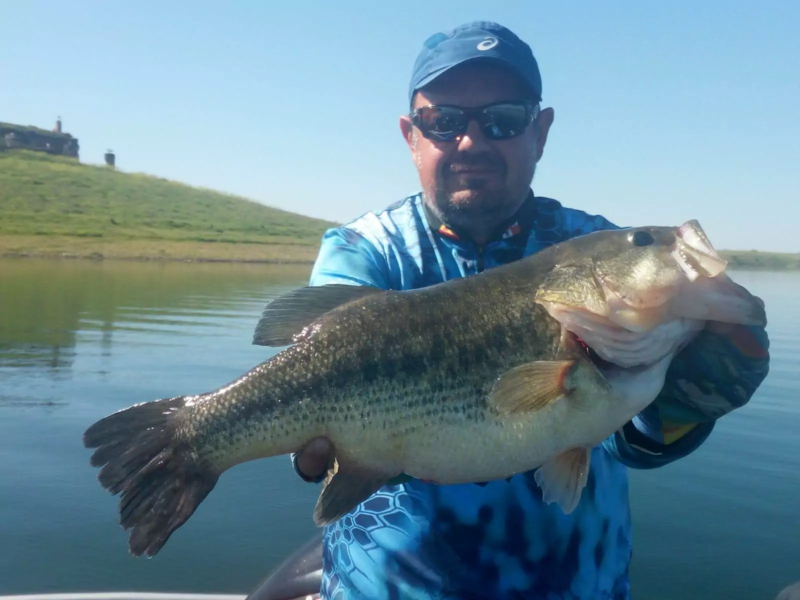

From wikimedia
From wikimedia
By:Aiden Alexander Colorado state champ
You will neeed some sort of rod for a beginer i would say a pushbutten or a spincast
You will need some lures I would perfer a wacky for a cheap option and a texas rig they can catch big and small bass
From wikimedia



From:wekimeadia